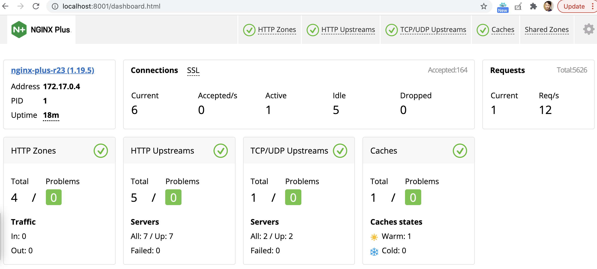

$ ls
backend-0.0.8.tar.gz env.list grpc-go-greeting-0.1.tar.gz nginx-lb.conf nginx-perf.conf nginxplus-23-r1.tar.gzUse Case via Docker
环境准备
1. 下载镜像及配置文件
-
提取码: 1wng
2. Load 容器镜像
for i in $(ls *.tar.gz) ; do docker load -i $i ; done性能调优
1. 启动 webserver
docker run --rm --name webserver -d nginxplus:23-r12. 启动 Nginx Plus
docker run -it --rm --name nginx-plus --link webserver -p 8001-8009:8001-8009 -v /Users/ksong/work/nginx/nginx-perf.conf:/etc/nginx/nginx.conf:ro nginxplus:23-r1-
Dashboard - http://localhost:8001/dashboard.html
-
Swagger UI - http://localhost:8001/swagger-ui/
3. 对别测试
优化前
$ wrk -t4 -c800 -d30s http://localhost:8002/
Running 30s test @ http://localhost:8002/
4 threads and 800 connections
Thread Stats Avg Stdev Max +/- Stdev
Latency 221.41ms 116.24ms 1.80s 80.95%
Req/Sec 823.45 149.65 1.30k 68.75%
98451 requests in 30.08s, 79.80MB read
Socket errors: connect 0, read 761, write 0, timeout 0
Requests/sec: 3273.02
Transfer/sec: 2.65MB优化后
$ wrk -t4 -c800 -d30s http://localhost:8003/
Running 30s test @ http://localhost:8003/
4 threads and 800 connections
Thread Stats Avg Stdev Max +/- Stdev
Latency 75.63ms 45.07ms 884.28ms 82.29%
Req/Sec 2.47k 615.15 4.21k 75.08%
294393 requests in 30.09s, 238.63MB read
Socket errors: connect 0, read 797, write 0, timeout 0
Requests/sec: 9783.57
Transfer/sec: 7.93MB4. Access 日志
for i in {1..10} ; do curl http://localhost:8004 ; done负载均衡
启动步骤
1. 启动微服务
docker run -it --rm --name springboot-1 -d cloudadc/backend:0.0.8
docker run -it --rm --name springboot-2 -d cloudadc/backend:0.0.8
docker run -it --rm --name echoserver-1 -d cloudadc/echoserver:1.1
docker run -it --rm --name echoserver-2 -d cloudadc/echoserver:1.1
docker run -it --rm --name grpc-server-1 -e PORT=8009 -d cloudadc/grpc-go-greeting:0.1 greeter_server
docker run -it --rm --name grpc-server-2 -e PORT=8009 -d cloudadc/grpc-go-greeting:0.1 greeter_server2. 启动 Nginx Plus
docker run -it --rm --name nginx-plus --link webserver --link springboot-1 --link springboot-2 --link echoserver-1 --link echoserver-2 --link grpc-server-1 --link grpc-server-2 -p 8001-8005:8001-8005 -p 8877:8877 -p 8009:8009 -v /Users/ksong/work/nginx/nginx-lb.conf:/etc/nginx/nginx.conf:ro nginxplus:23-r13. 测试
http://localhost:8005
./echoclient localhost
docker run --env-file ./env.list cloudadc/grpc-go-greeting:0.1 greeter_client结果截图

API 网关
Limit Reqs
1. 启动微服务
docker run -it --rm --name springboot-1 -d cloudadc/backend:0.0.8
docker run -it --rm --name springboot-2 -d cloudadc/backend:0.0.82. 启动 Nginx Plus
docker run -it --rm --name nginx-plus --link springboot-1 --link springboot-2 -p 8001-8002:8001-8002 -v /Users/ksong/work/nginx/nginx-req-limit.conf:/etc/nginx/nginx.conf:ro nginxplus:23-r13. 测试
$ for i in {1..5} ; do curl localhost:8002/api/fruits ; echo ; done
[{"id":1,"name":"Cherry"},{"id":2,"name":"Apple"},{"id":3,"name":"Banana"}]
<html>
<head><title>503 Service Temporarily Unavailable</title></head>
<body>
<center><h1>503 Service Temporarily Unavailable</h1></center>
<hr><center>nginx/1.19.5</center>
</body>
</html>Keyvals
1. 启动微服务
docker run -it --rm --name springboot-1 -d cloudadc/backend:0.0.8
docker run -it --rm --name springboot-2 -d cloudadc/backend:0.0.92. 启动 Nginx Plus
docker run -it --rm --name nginx-plus --link springboot-1 --link springboot-2 -p 8001-8002:8001-8002 -v /Users/ksong/work/nginx/nginx-kayval.conf:/etc/nginx/nginx.conf:ro nginxplus:23-r13. 测试
$ curl -X POST "http://localhost:8001/api/6/http/keyvals/canary" -H "accept: application/json" -H "Content-Type: application/json" -d "{ \"abswitch\": \"0\"}"
$ curl localhost:8002/info
{group=io.cloudadc, app=backend, version=0.0.8}
$ curl -X POST "http://localhost:8001/api/6/http/keyvals/canary" -H "accept: application/json" -H "Content-Type: application/json" -d "{ \"abswitch\": \"1\"}"
$ curl localhost:8002/info
{group=io.cloudadc, app=backend, version=0.0.9}JWT
1. 启动微服务
docker run -it --rm --name springboot-1 -d cloudadc/backend:0.0.8
docker run -it --rm --name springboot-2 -d cloudadc/backend:0.0.92. 生成 api_secret.jwk
$ echo -n cloudadcjwt | base64 | tr '+/' '-_' | tr -d '='
Y2xvdWRhZGNqd3Q3. 创建 api_secret.jwk 文件，添加如下内容
{"keys":
[{
"k":"Y2xvdWRhZGNqd3Q",
"kty":"oct",
"kid":"0001"
}]
}4. 生成客户端 API Key
$ echo -n '{"typ":"JWT","alg":"HS256","kid":"0001"}' | base64 | tr '+/' '-_' | tr -d '='
eyJ0eXAiOiJKV1QiLCJhbGciOiJIUzI1NiIsImtpZCI6IjAwMDEifQ
$ echo -n '{"name":"Cloudadc System","sub":"cloudadc","iss":"My API Gateway"}' | base64 | tr '+/' '-_' | tr -d '='
eyJuYW1lIjoiQ2xvdWRhZGMgU3lzdGVtIiwic3ViIjoiY2xvdWRhZGMiLCJpc3MiOiJNeSBBUEkgR2F0ZXdheSJ9
$ echo -n $HEADER_PAYLOAD | openssl dgst -binary -sha256 -hmac cloudadcjwt | base64 | tr '+/' '-_' | tr -d '='
mrxpQNel2N5apjLjjkwHVh7fsnnGYBThGhgRr61o_wE
$ echo $HEADER_PAYLOAD.mrxpQNel2N5apjLjjkwHVh7fsnnGYBThGhgRr61o_wE > quotes.jwt5. 启动 Nginx Plus
docker run -it --rm --name nginx-plus --link springboot-1 --link springboot-2 -p 8001-8002:8001-8002 -v /Users/ksong/work/nginx/nginx-jwt.conf:/etc/nginx/nginx.conf:ro -v /Users/ksong/work/nginx/api_secret.jwk:/etc/nginx/conf/api_secret.jwk:ro nginxplus:23-r16. 测试
$ curl -H "Authorization: Bearer `cat quotes.jwt`" http://localhost:8002/info
{group=io.cloudadc, app=backend, version=0.0.9}**